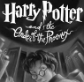

This puzzle presents as a big GIF. The palette of the GIF file, interpreted as ASCII, reads “Pixels are UTF-8”.
Interpreting the pixels as UTF-8 reveals Chinese numbers between 0 and 255 (either normal or financial, but this does not yet matter), separated by spaces.
Treating each number as a byte gives a large animated GIF, where each frame is a Hebrew letter (either red or blue), or the Hebrew word אפס, or a blank. The Hebrew word means zero; the letters are interpreted as gematria (which doesn’t have a zero, hence the need for a special case). The numbers, again, are between 0 and 255
Treating the numbers as bytes again gives another image, which reads “odd red and even blue numbers are ones.” Interpreting the Hebrew according to this instruction, you get “even financial and odd normal numbers = 1.”
Reinterpreting the Chinese gives another GIF, with the
answer, Harry Potter and the Order of the Phoenix:

A Python script implementing the solution is available here.